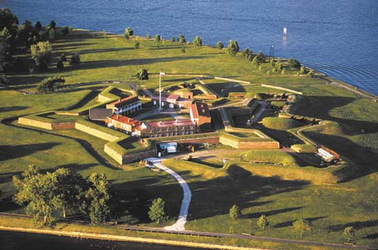

National Parks – America's Natural Legacy
Fort McHenry National Park

Fort McHenry is a coastal star-shaped fort well known for its role in the War of 1812, when it successfully defended Baltimore Harbor from an attack by the British navy in Chesapeake Bay. It was during the bombardment of the fort that Francis Scott Key was inspired to write "The Star-Spangled Banner," It was, however, the valiant defense of the fort inspired Francis Scott Key to write "The Star-Spangled Banner," which later became the national anthem of the United States.